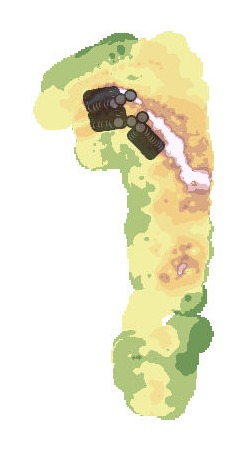
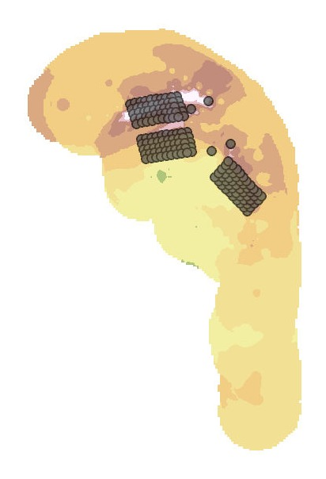
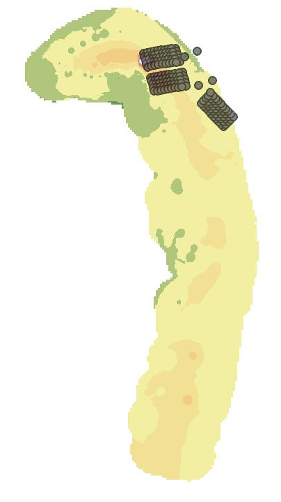
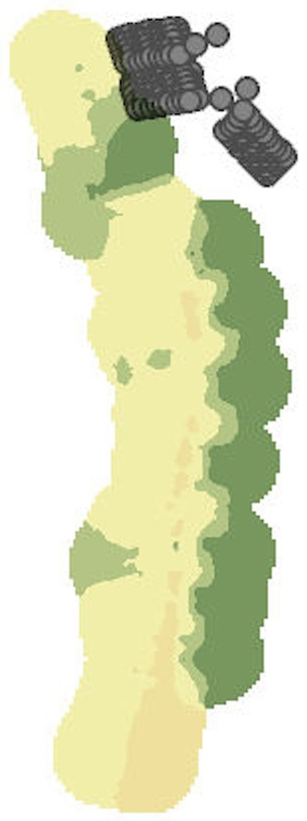

Virginia Barrier Island Topographic Analysis
Processed GPS survey data in ArcGIS to generate interpolated elevation surfaces across four survey years, supporting shoreline, area, and volume change calculations for a dynamic coastal system.
Data Science · Geospatial Analysis · Environmental Applications
I am an undergraduate student at the University of Virginia studying data science and applied statistics. My interests sit at the meeting point of data science, geospatial analysis, and GIS.
Processed GPS survey data in ArcGIS to generate interpolated elevation surfaces across four survey years, supporting shoreline, area, and volume change calculations for a dynamic coastal system.
Designed a machine learning system to predict flight collision risk from aviation and geospatial data. Built ETL pipelines with Pentaho, stored spatial data in PostGIS, and evaluated Random Forest, SVM, and K-Means models, with results visualized in ArcGIS and Power BI.
Developing Power Automate workflows for a corporate real estate organization, including an AI-integrated tool that extracts construction cost values with significantly improved accuracy, plus a project tracker uniting SharePoint and Power BI.
Built a relational database modeling 18+ entities to centralize operations for a university intramural sports program, replacing a fragmented multi-spreadsheet system with a single structured source of truth.
Preprocessed, analyzed, and visualized synthetic cyber attack datasets with more than 16 million records, applying supervised and unsupervised models with federated learning techniques. Awarded first place for the group capstone project.
Research assistant on an ongoing University of Virginia initiative examining how data science and machine learning methods can be applied responsibly and equitably across real-world contexts.




IDW-interpolated elevation surfaces of Myrtle Island, Virginia, generated in ArcGIS from GPS survey data across four survey years. Warmer tones indicate higher elevation relative to mean sea level; gray points mark researcher survey grid locations. Together the surfaces trace how the island's shape and elevation shifted between 1996 and 2001.
Building automation workflows and internal tools for the Corporate Real Estate and Workplace Solutions department, including AI-assisted document extraction and an integrated project tracking web app.
Processed multi-year GPS survey data in ArcGIS to quantify elevation, shoreline, and volume change on Virginia's barrier islands.
Designed a geospatial machine learning system for flight collision risk, from ETL pipelines and PostGIS storage through model training and visualization.
Supported cybersecurity operations by monitoring alerts and triaging incidents.
Analyzed synthetic cyber attack datasets with 16+ million records and applied machine learning with federated techniques. First place, group capstone project.